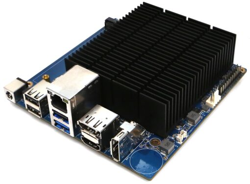

Guide · Home Assistant hardware
The best mini PC for Home Assistant (2026)
The short answer: you don't need a special mini PC for Home Assistant — you need any 64-bit x86-64 PC that boots in UEFI mode, running Home Assistant OS. That is the official install path for generic x86 hardware, and it is what most of the small Intel and AMD boxes on the market are built for. If you want to skip the picking entirely, Home Assistant Green is the official pre-built appliance. If you want one concrete x86 pick, the ODROID-H5 stands out on pure specification: onboard 10 GbE networking and four M.2 slots, at a price and power draw meant for running around the clock.
This guide walks through what the software actually requires, which boxes meet it, where the common buying trap is (it involves NVMe SSDs), and when a mini PC is the wrong answer. If you would rather run Home Assistant in Docker on a machine you already have, see our guide to Home Assistant in Docker.
What Home Assistant needs from the hardware
The Home Assistant installation documentation for generic x86-64 hardware is short, because the requirements are modest. The system must be 64-bit and must boot UEFI. One line in that documentation matters more than any CPU figure: the boot medium must support 512-byte logical sectors — 512n, or 512e emulated. Some NVMe SSDs are formatted 4Kn (4 KB sectors) only, and Home Assistant OS cannot boot from them. That is the single most common way buyers pick a mini PC that technically fits the spec and then refuses to boot the installer.
Beyond that, the machine is doing far less work than a desktop. Home Assistant's core, plus a handful of integrations and add-ons, runs comfortably on the low-power Intel N-series and equivalent AMD parts that fill the mini PC market. What actually shapes your choice is everything else you plan to put on the same box: camera recording and detection, database retention, voice processing, and how much storage you want for all of it.
The official documentation describes two install types on x86. The recommended one is Home Assistant OS written to a USB drive or installed directly from a boot medium. The alternative is Home Assistant Container, the Docker-based setup, which shares the same generic-x86 documentation page but asks more of you: you assemble the pieces (core, MQTT broker, add-ons you want) rather than getting them in one appliance-style image. Home Assistant's own guidance is that HAOS remains the recommended install for most users.
Pick 1: Home Assistant Green — the official appliance
The easiest "should I buy a mini PC?" answer is: don't. Home Assistant Green is the official hub from Nabu Casa, the company behind Home Assistant. Setup is literally plug in power, plug in Ethernet, and follow the guided setup in the app — with the caveat that the initial setup requires an internet connection. There is no image to flash and no UEFI setting to find.
Two things worth knowing. First, Green is an ARM machine, not x86 — Nabu Casa designed and built it as an appliance, and the generic x86-64 documentation does not apply to it. Second, buying it supports the projects: Nabu Casa's profits fund Home Assistant and ESPHome through the Open Home Foundation. If Green's storage or processing ceiling ever feels tight, that is the point at which a mini PC earns its place. Read our full write-up of Home Assistant Green.
Pick 2: ODROID-H5 — the serious x86 board
Hardkernel's ODROID-H4 Plus is discontinued — the product page is out of stock and points buyers to its successor — so the current part is the ODROID-H5. Per Hardkernel's own product page, the H5 carries onboard 10 GbE networking and four M.2 slots: three PCIe Gen3 x2 and one PCIe Gen3 x1. That is enough to hold NVMe SSDs, SATA cards, additional network cards, Wi-Fi 6E or Wi-Fi 7 adapters, or AI accelerators. The whole design is aimed at low power draw for a machine that runs 24 hours a day, which is exactly the duty cycle of a home automation server.

Check ODROID-H5 on Amazon for current price and stock, and the Hardkernel page for the full spec sheet. As a bare board it assumes you will add your own memory and storage — and remember the 512-byte-sector rule when picking that NVMe drive.
Picks 3–5: budget x86 boxes from the mini PC makers
The big catalog of Intel N-series mini PCs is, spec-for-spec, interchangeable as far as Home Assistant is concerned. What varies between makers is build quality, storage configuration, and whether the product page you are reading is still live. All of the models below were verified against the manufacturers' current catalogs.
- GMKtec G3S (Intel Alder Lake-N95): listed on the official GMKtec catalog. The same catalog lists the higher-tier NucBox G3 Ultra (Intel Pentium Gold 7505) and G5S (Celeron N5095). Check GMKtec G3S on Amazon.
- Beelink EQ14 (Intel N150): the current EQ-series model listed on Beelink's official site. Beelink's older specific product URLs have gone 404 while the Shopify catalog rotates, so treat the catalog page as the source of truth. Check Beelink EQ14 on Amazon.
- Minisforum: a caution rather than a pick. Minisforum's budget-relevant page for the NAB5 returns 404, and no current N100/N150-specific Minisforum product page could be verified; the catalog lists models such as the M5S (Ryzen 3 5400U) and M2 Pro S (i7-1185G7), which are more machine than Home Assistant needs. If you shop in that catalog, verify the exact model and the boot-drive sector format before buying.
A generic box of this type running HAOS is entirely legitimate — the official x86-64 install path exists precisely so that any 64-bit UEFI machine works. Check Intel N150 mini PCs on Amazon to survey the field.
The buying checklist
- 64-bit x86-64, UEFI boot. Every machine above qualifies per its maker's documentation.
- Boot drive with 512-byte logical sectors (512n/512e). Verify before buying, especially with bare NVMe SSDs; 4Kn-only drives will not boot HAOS.
- Ethernet on board. Home Assistant expects a wired connection; Green and the ODROID boards have one built in, as do essentially all catalog mini PCs.
- Storage for what the box will hold. Recordings, databases and add-ons grow. Two drive slots beat one.
- Low idle power. This runs 24/7. Low-power N-series parts and boards designed for always-on use (like the H5) pay for themselves in a year of electricity.
Install: two paths, one recommendation
- Home Assistant OS (recommended). Per the official generic-x86 guide: download the HAOS image, write it to a USB drive, boot the mini PC from it in UEFI mode, and either run it from that medium or install it to the internal drive. The machine then behaves like an appliance.
- Home Assistant Container (Docker). An alternative covered by the same documentation. You keep the host operating system and run Home Assistant in a container or a Docker Compose stack. More flexible, more work, and you own the updates. We cover the details in Home Assistant in Docker.
If your previous box was a Raspberry Pi, the migration story is straightforward: take a full backup from the old install, install HAOS on the new machine, and restore. The same procedure covers a Raspberry Pi 5 — though we could not verify current Raspberry Pi 5 specifications from the primary source during research (the official product page sits behind a bot check), so treat any spec comparison against the Pi as unverified and check the Raspberry Pi product page yourself.
Green vs Raspberry Pi vs mini PC, in one breath
Home Assistant Green is the appliance: preinstalled, supported end to end, profits funding the Open Home Foundation. A Raspberry Pi is the hobbyist path: cheaper at the low end, general-purpose, and yours to configure. A mini PC is the middle path with an x86 safety net: commodity parts, real storage options, and the ability to repurpose the box if Home Assistant ever moves elsewhere. Per the Home Assistant documentation, HAOS on generic x86-64 is the standard platform for that last path, and Green is positioned as the easiest way to run the whole stack.
One box for router and Home Assistant? OpenWrt on x86
OpenWrt, the open router operating system, ships official x86/64 builds — the generic x86/64 profile is available in current releases and boots on the same class of UEFI x86 PC that runs HAOS, per the OpenWrt device database and the OpenWrt firmware selector. That makes the "one box does everything" idea technically real: a mini PC running OpenWrt as router, with Home Assistant alongside in a container or a virtual machine.
Our recommendation runs the other way. A router and a home automation server have different failure modes and different maintenance rhythms; when the combined box reboots for a Home Assistant experiment, your household internet reboots with it. If you want a router project, give it its own cheap box — OpenWrt on x86 is a fine destination, and our primer covers the decision. See OpenWrt for the home and our Raspberry Pi for Home Assistant guide for the small-box alternative.
FAQ
What's the best mini PC to run Home Assistant?
Any 64-bit x86-64 mini PC with UEFI boot and a 512-byte-sector boot drive, running Home Assistant OS. The ODROID-H5 is a strong current pick; a Beelink EQ14 or GMKtec G3S-class Intel N-series box works well on a budget.
Do I need a mini PC for Home Assistant, or is HA Green enough?
For most homes Home Assistant Green is enough: it is the official pre-flashed hub, and you just plug in power and Ethernet. A mini PC makes sense when you want x86 software, more storage for recordings, or a second use for the box.
Home Assistant Green vs Raspberry Pi 5: which should I buy?
Home Assistant Green is a purpose-built appliance with Home Assistant OS preinstalled and profits that support the Open Home Foundation. A Raspberry Pi 5 is a general single-board computer you install HAOS on yourself; check the Raspberry Pi product page for current specifications.
Can I run OpenWrt on the same x86 mini PC that runs Home Assistant?
Official OpenWrt x86/64 builds exist and boot on any UEFI x86 PC, and some people combine router and Home Assistant duties on one box through virtualization or containers. Most people are better served by separate boxes: keep the router simple so a Home Assistant reboot does not take the network down.
Which x86 mini PC CPU (N95/N100/N150) is enough for Home Assistant?
Home Assistant itself is light. Intel's low-power Alder Lake-N and Twin Lake parts listed by makers — the N95 in the GMKtec G3S, the N150 in the Beelink EQ14 — are in the class of hardware people run HAOS on comfortably, with headroom for add-ons depending on what else the box does.
How do I install Home Assistant OS on a generic x86-64 mini PC?
Follow the official generic-x86 installation guide: write the HAOS image to a USB drive, boot the mini PC from it in UEFI mode, and let the installer take over. The boot medium must support 512-byte logical sectors, which rules out some NVMe SSDs that are 4Kn only.